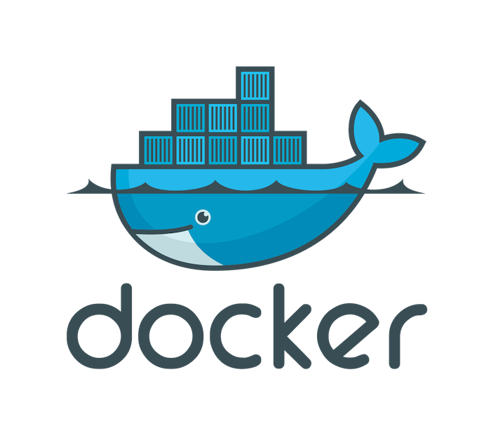

Intro to Docker
Evan Machnic //
@emachnic
Bryson Reynolds //
@bryson_reynolds
Background

What is Docker?
Virtual Environment
✔
Virtual Machine
✖︎
How it works
Docker Engine
Docker Client
Demo
Thank You!
Evan Machnic //
@emachnic
Bryson Reynolds //
@bryson_reynolds